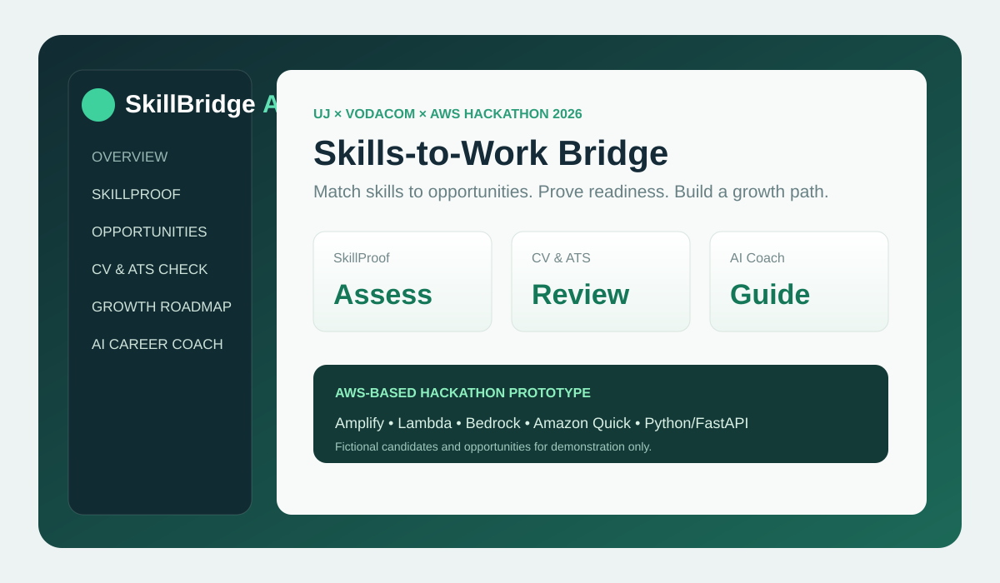
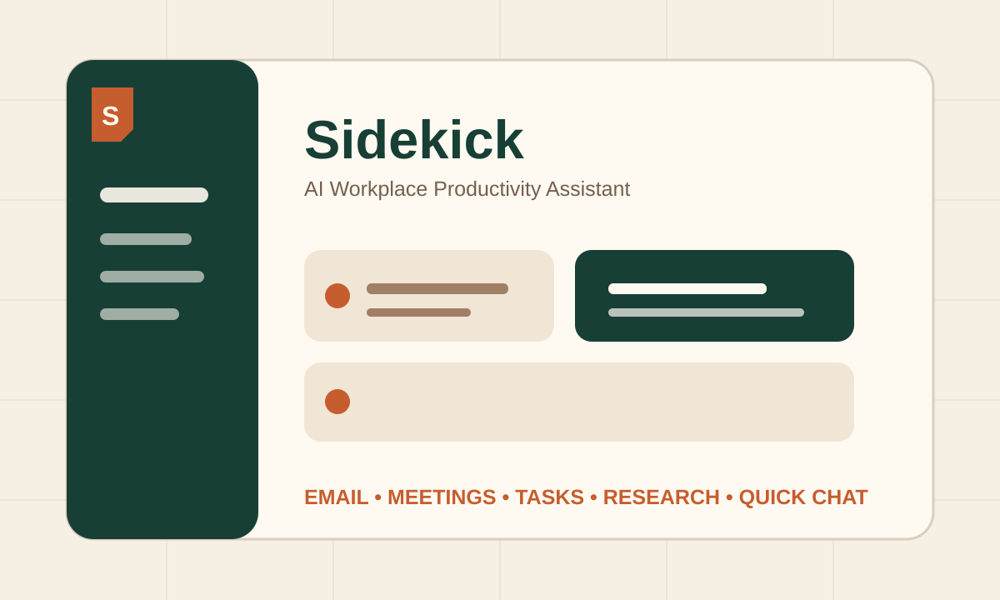
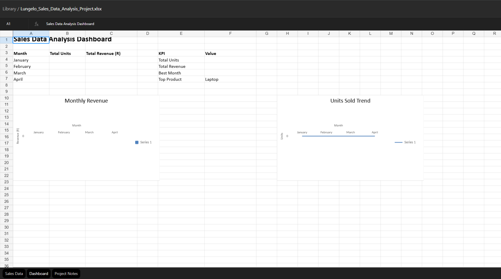
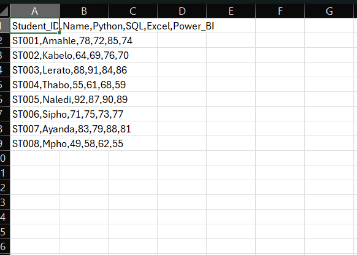
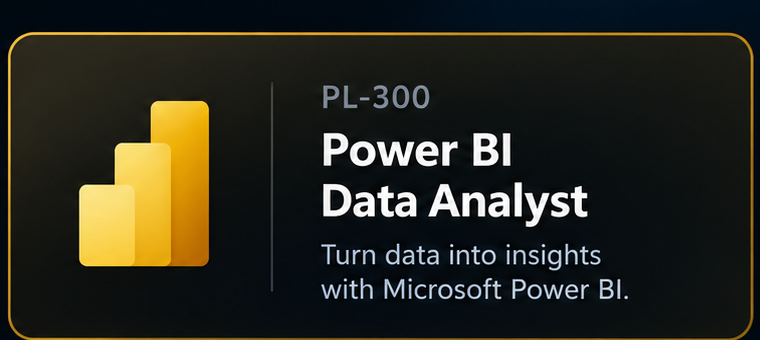
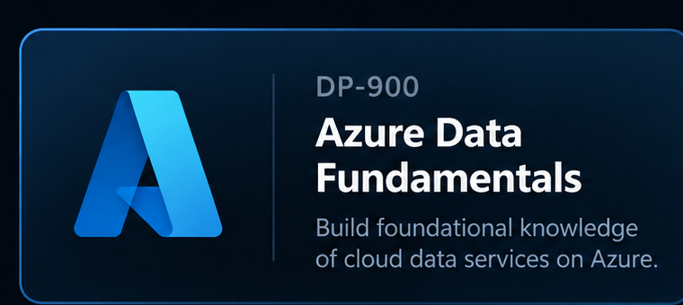
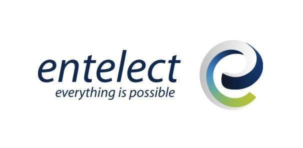
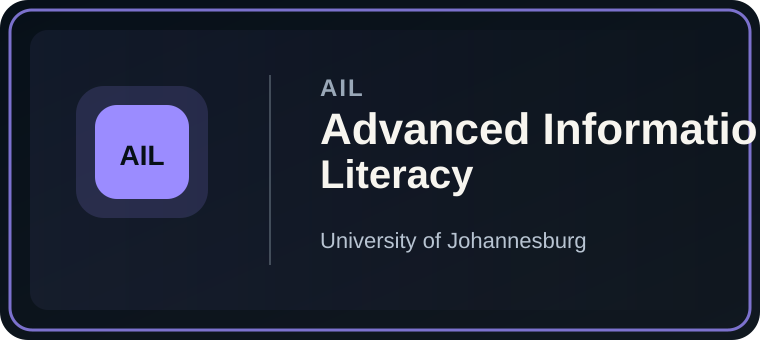

SQL
Queries, relational data and database fundamentals.
● ProficientTshedza Lungelo Mabaso — Information Systems student focused on Data Engineering, Data Science & Analytics.
I am a University of Johannesburg student building practical experience across data analysis, cloud data fundamentals, programming, AI-assisted workflows and information systems. I hold Microsoft PL-300 and DP-900 certifications and I am currently a Data Visualization Trainee with Excelerate.
01 / ABOUT
I am a second-year BCom Information Systems student at the University of Johannesburg, with my final year expected in 2027. My long-term goal is to work in Data Engineering and Data Science, where I can combine programming, databases, analytics and business understanding.
My strongest programming areas are SQL and C#. I use Excel and Power BI for analysis and reporting, and I am continuing to build Python, Tableau, web-development and cloud skills through projects, certifications, simulations and hackathons.
Building practical evidence through coursework, certifications, hackathons, an internship and portfolio projects.
02 / SKILLS
I prefer to show where I am strong and where I am still developing rather than overstate experience.
Queries, relational data and database fundamentals.
● ProficientProgramming, logic and software-development coursework.
● ProficientData projects, CSV processing and programming practice.
◆ DevelopingAcademic data analysis, formulas, charts and dashboards.
✓ Applied at UJStructuring, interpreting and presenting data for insight.
✓ Academic experienceData modelling, visualisation and reporting; Microsoft PL-300 certified.
✓ Certified & appliedAzure data fundamentals certified (DP-900); Azure Administrator Associate exam booked.
✓ DP-900 certifiedResponsive interfaces built while learning through projects.
○ BeginnerProject hosting, repositories and GitHub Pages deployment.
◆ DevelopingUsed to analyse manufacturing telemetry and build an interactive downtime dashboard in the Deloitte job simulation.
◆ Practical exposureHackathon exposure to Amplify, Lambda, Bedrock and Amazon Quick through SkillBridge AI.
○ Hackathon exposure03 / EXPERIENCE
Current structured experience alongside university studies.
Excelerate • Remote
Started the Excelerate Data Visualization Trainee remote internship and completed onboarding in October 2026. I am beginning structured training and project-based work in data visualization and analytics; this section will be updated as I complete real assignments.
04 / PROJECTS
Each featured project links to a live prototype or project evidence — not just a description.

Open live demo ↗A skills-to-work bridge prototype built for a UJ × Vodacom × AWS hackathon. It demonstrates synthetic opportunity matching, internal SkillProof assessments, a transparent CV/ATS check, a growth roadmap and an AI Career Coach using AWS-oriented integrations. All candidate and opportunity data is fictional demo data.
A student support and communication hub developed with my team during a UJ DEV Society hackathon. The prototype combines campus updates, service routing, support-request tracking, digital queues, accessibility features and simulated campus-bus tracking.

Open live site ↗An AI-powered workplace productivity assistant prototype for professional emails, meeting summaries, task planning, research support and contextual quick chat. Built with prompt engineering, responsible-AI safeguards, local persistence and accessible UX.

View project ↗A guided analytics project that transforms electronics sales records into monthly summaries, KPIs and visual trends for management reporting.

View code ↗A beginner Python project that reads structured CSV data, calculates student and subject averages, ranks performance and identifies strengths and improvement areas.
05 / EDUCATION & CREDENTIALS
Credential cards show certification artwork and organisation logos. Select “View certificate” to open the original evidence file in a new tab.
University of Johannesburg • 2025–Present
Second year in 2026 • Final year expected in 2027
PL-300 • Microsoft • Earned September 2026
Power BI, data modelling, DAX and reportingView certificate ↗
DP-900 • Microsoft • Earned 3 October 2026
Core Azure data concepts, relational and non-relational workloadsView certificate ↗Forage • September 2026
Tableau, Excel, data analysis & forensic technologyView certificate ↗Google / Coursera • August 2026
AI productivity, prompting & responsible AIView certificate ↗NEMISA • September 2026
Training completion — not the Microsoft certification examView certificate ↗Next Microsoft certification goal
Examination booked; certification not yet earned.
Hackathon • 12 September 2026
Algorithmic simulation and strategy challengeView certificate ↗University of Johannesburg
Technology & future-skills development
University of Johannesburg
Academic achievement06 / CONTACT
I am building practical experience in data, analytics, cloud and information systems while completing my degree, and I welcome opportunities to learn, collaborate and contribute to useful technology projects.